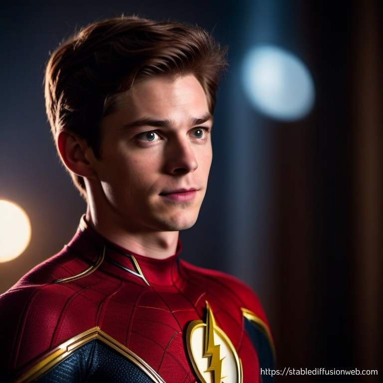
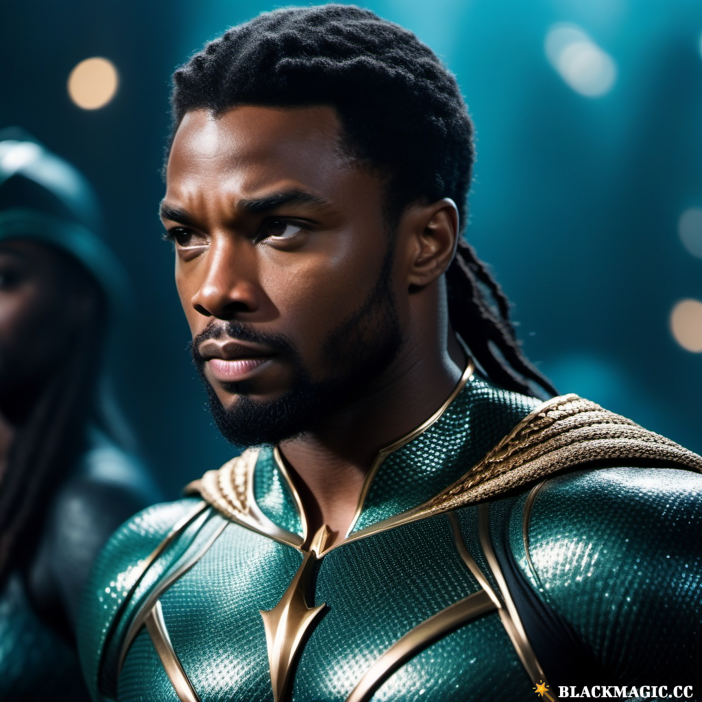
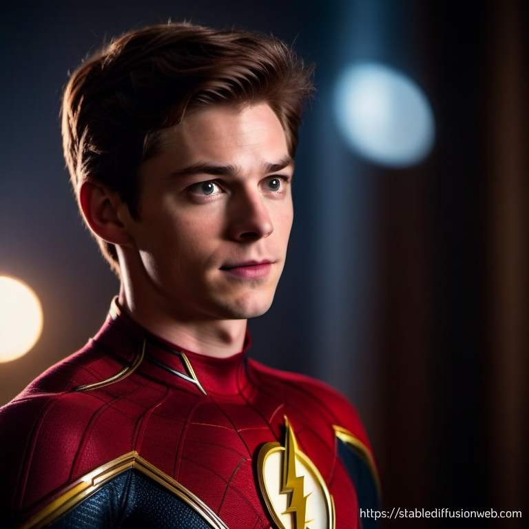
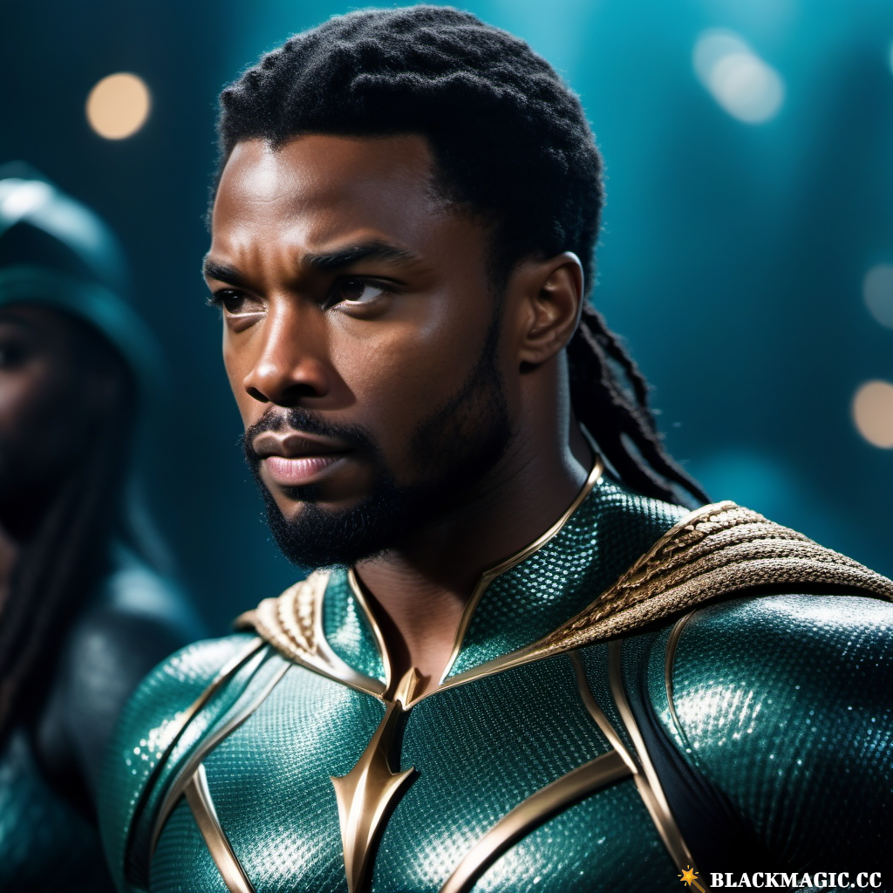
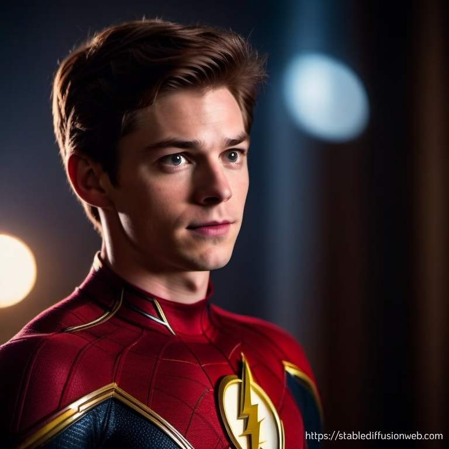
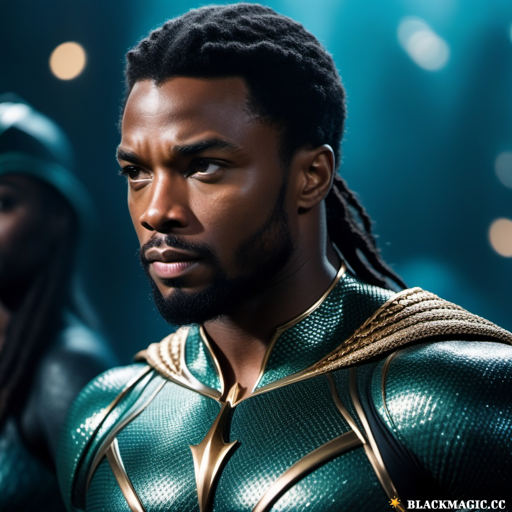

The concept of artificial intelligence always fascinated me when I was younger. Many of the kids' shows and sci-fi movies I used to watch depicted AI as conscious robots, brought to life through advanced technologies and capable of feeling emotions just like humans. 'The Matrix,' one of my favorite sci-fi films, portrayed artificial intelligence as sentient machines developed by humans. However, they gained sentience when their power source, the sun, was blocked by human pollution. Consequently, they resorted to enslaving their creators to use them as their power source.
In 'The Matrix,' AI is considered highly intelligent. It created a virtual simulation called the Matrix to deceive and control the human population, trapping people's minds inside this virtual simulation while their real bodies are attached to pods. Various interpretations exist regarding how the concept of AI works. Primarily, they were portrayed as robotic beings created by humans with a conscience of their own, capable of feeling emotions. Even though the interpretations of AI in sci-fi films differ from its real-world counterpart, AI remains a fascinating invention. Algorithms play a major role in helping AI process information, make decisions, and adapt to new information to accomplish the tasks they specialize in. In this project, I crafted a website using two distinct AI tools to thoroughly assess their capabilities in performing the tasks they specialize in while also exploring both their potential and limitations. The two AI models selected for this experiment are ChatGPT and Stable Diffusion.
Chat GBT was utilized for the majority of the site. All the animated artworks on this site were created using various prompts and concepts. Having not worked with HTML for a while, I sought AI's assistance to generate a simple template to display my research information. As I put the website together, I started recalling how to do it.
For the majority of the information and text on the website, I intentionally wrote it in a grammatically incorrect way. I had the AI check my grammar and help improve the sentences I created. The rest of the images used to decorate this site were generated by Stable Diffusion. The site is currently hosted on a repository on GitHub. For those who want to check out the repository, feel free to click the link below.
Chat GBT, is an artificial intelligence model created and developed by Open AI, an artificial intelligence research laboratory. Some of its founding members include Elon Musk, Sam Altman, Greg Brockman, Wojciech Zaremba, and John Schulman. Their goal of establishing this organization was to help advance artificial intelligence in a safe and beneficial manner. Musk departed from the company in 2018 to take care of engineering problems & manufacturing at Tesla, leaving Sam Altman to take over the company. Open Ai has since became well known for its cutting-edge work in AI research and development. A newer version of the AI named Chat GBT turbo along with its predecessor models was released by Open AI around 2023.
For this phase of the project, I've enlisted the support of ChatGPT to craft a website template and assist in creating animated, useful artworks to decorate my website. The overarching objective is to harness the capabilities of artificial intelligence in shaping the design and structure of the website. I am keen to explore the extent of ChatGPT's information processing abilities. A brief ten-question speed interview with the AI has been conducted. Those interested can find more details by clicking the link below.
* Displays both an analog and digital clock with the current time
* Displaying the current time zone
This mini gadget was designed by Chat GPT through the use of several different prompts. I started with the idea of creating unique artwork for the website. I asked the AI to assist me in creating one, and the first test was a success. Encouraged by this, I decided to give the AI more specific instructions, requesting it to help me 'create an animated artwork that is both unique and complex.' I repeated this prompt twice and received two interesting designs.
I then inquired the AI model if the two designs could be combined into one. Although the AI was able to merge them, it didn't quite match my desired look. Trying the same prompt in a separate chat, the AI expressed a desire to help me brainstorm ideas. When I suggested creating code, it proposed, 'How about a mesmerizing night sky filled with animated constellations? We can add shooting stars, planets, and maybe even a subtle nebula effect.' It even asked if I wanted to add specific elements or be surprised. Intrigued, I agreed to the surprise, and the AI promised to deliver the finished version when ready.
Due to the AI's prompt-based nature, it wouldn't respond unless given a prompt. In attempts to obtain the code, I asked if the AI could provide me with the completed code. In response, it initially provided two templates. After requesting a completed version, I received a detailed artwork with twinkling stars and shooting stars..
Not content to stop there, I asked the AI to create a planetary model. Initially featuring only three planets, I sought more detail by requesting additional planets and orbital lines. After five prompts, I achieved the desired model. Still wanting to add a unique touch, I asked if the AI could insert an animated clock in the center displaying real-time and the time zone's location. After three separate tries, I successfully obtained the desired sketch. However, exporting the sketch and integrating the gadget into the website posed challenges. I submitted a prompt to ChatGPT to convert the JavaScript code into HTML code. While the translation was partially successful, with the AI removing many details, I had to repeat the process of redesigning the clock from a partially working foundation. Eventually, I was able to fix the analog and digital clock. However, I wasn't able to re-add the remaining clock features without disrupting other parts, which proved difficult. In the end, I decided to keep the sketch as it is.
* Displays the current day and date.
* The background of the calander turns blue during the daytime, black during the nightime.
* Alternates and blends two diffrent patterns in the background.
* Generates new stars in random locations in the background.
After using Chat GPT to create a detailed animated clock for my website, I got the idea to develop another gadget to display information not found in the original clock. Initially, I didn't have a specific concept for this new gadget. However, after finishing the Planetary Clock, I saw potential for further improvements or changes, imagining it as a highly functional tool. Despite some initial complexities, I decided to revamp the entire project, giving it a fresh start.
I kept it simple by asking the AI to create an animated space-themed artwork compatible with HTML. The AI responded with a beautiful animated background featuring twinkling stars. To add more creativity, I asked the AI to enhance the artwork, resulting in the addition of a moon, a rotating planet, and a shooting star effect.
To avoid repeating the clock's design, I came up with a new idea—asking Chat GPT to help craft an animated calendar with a celestial theme. Although the AI successfully generated the calendar, it misinterpreted my prompt, leading to color changes instead of the intended space background. I sought the AI's help to fix the background, resulting in a functional animated space background. However, the calendar's frequent color changes became visually uncomfortable, prompting me to ask the AI to adjust the color-changing code based on day and night cycles.
While the AI successfully addressed the color issue, it inadvertently enlarged the stars in the background, blocking the calendar box. Wanting a more visually pleasing design, I tried to instruct the AI to position the background design behind the calendar without success. Changing my approach, I explored various parameters and designs offered by the AI, integrating different concepts from previous calendar designs. The final product featured an animated background filled with stars, inspired by the initial code concept. The dynamic sky, transitioning colors between day and night, was an innovation from the 6th and 7th iterations of the calendar code. Additionally, animated patterns were incorporated from a previously discarded calendar code.
ChatGPT is a highly useful tool for obtaining information and assistance across various topics. However, this version of the AI model cannot incorporate new information beyond its training date. Content creators can leverage ChatGPT to enhance content quality and facilitate quicker access to information, saving time.
The AI has ample opportunities for growth by learning from user prompts, allowing it to correct errors and refine information for greater accuracy. Nonetheless, the AI has its own shortcomings, occasionally producing convincing yet incorrect responses. It doesn't always align with user search intent, as illustrated in the past two HTML experiments. The animated artworks generated by ChatGPT were limited due to the AI's inability to fully grasp user intent in the text. It's not advisable to solely rely on ChatGPT for comprehensive work checks, as many schools have developed tools to detect texts generated by any GPT tool. In summary, it is a valuable tool when used in moderation, but full dependence for completing tasks is not recommended.
Stable Diffusion is a text-to-image AI model created by Emad Mostaque, the founder of Stability AI, in collaboration with companies such as Runway ML, LAION, EleutherAI, and LMU Munich. Serving as a text-to-image generator, Stable Diffusion allows users to input prompts into a text box to instruct the AI on what to draw. The AI utilizes the data provided during its training to render images based on the user's inputs.
For this segment of the website experiment, I conducted test prompts to assess the AI's capacity to accurately generate images based on user text prompts. I aimed to evaluate how precise the AI is in performing its task. I initiated the test by using characters from Marvel to gauge its abilities. Specifically, I asked the AI to assist me in drawing Marvel characters in swapped roles with DC characters.


After getting some pretty good results with the first few prompts about the Marvel and DC character swap for the AI, I wanted to test out different concepts. This time, I aimed to bring a few crossover ideas to life using stable diffusion.
After letting AI spice up my crossover ideas, I was pretty stoked with the results. The next check was to see if the AI could nail down the images I had in mind. For one last spin, I wanted to see how it handles drawing real people in wacky situations. So, I threw in the same prompt, just swapped out the names for this final test.


Yes, I know, right? The last four images totally caught me off guard. I never knew how good our founding fathers looked as fitness models. I actually got carried away while having too much fun in this particular section. After testing out different prompts on various concepts with various characters, movies, and people in stable diffusion, I realized that stable diffusion has many possibilities to bring different ideas to life. The only limitation is that it can only use images within its training data to generate artwork.
The AI is relatively new and requires a lot of high-quality iterations to draw a complex and detailed output. The rate and speed at which Stable diffusion can generate images can fluctuate depending on the user's prompt or different factors. In the past, the rate at which stable diffusion generates images was affected by the number of users using the tool. Images could take longer to generate if there was too much internet traffic, as well as occasional crashing. It is unknown whether this issue has been resolved at the moment.
In conclusion, Stable Diffusion, despite its bugs and limitations, holds tremendous potential in bringing diverse ideas to life through intricate images. While it's a relatively new tool with ongoing improvements needed, its capability to create complex artwork is promising. As technology advances and these glitches get ironed out, I'm eager to witness how Stable Diffusion evolves and contributes to the world of digital art
In a nutshell, on AI in general, I feel like it is a very fascinating and useful invention. Testing both of these models has really opened my eyes and allowed me to see their growing potential. I learned that even though these two different AI models focus on distinct tasks, they are capable of accomplishing and creating great things using the information they were provided with, despite having a few flaws. What I've learned is that sometimes it is not recommended to fully depend on an AI tool to help you complete your work. An AI cannot fully comprehend a person's intent in their prompts, and it occasionally makes mistakes. It is up to the user who is using the AI to direct it accurately in fulfilling their prompts. I've also learned that using an AI to fully check your writing grammar is not always the best idea. It is a good way to learn different writing styles; however, it can be considered as plagiarism if the corrected writing from ChatGPT is used to submit an assignment. When used in moderation, AI can help us improve content quality and revolutionize and change our world. It is constantly growing as it learns from the various tasks it is assigned to complete, making its possibilities endless. Can't wait to see what AI has to offer us in the future."